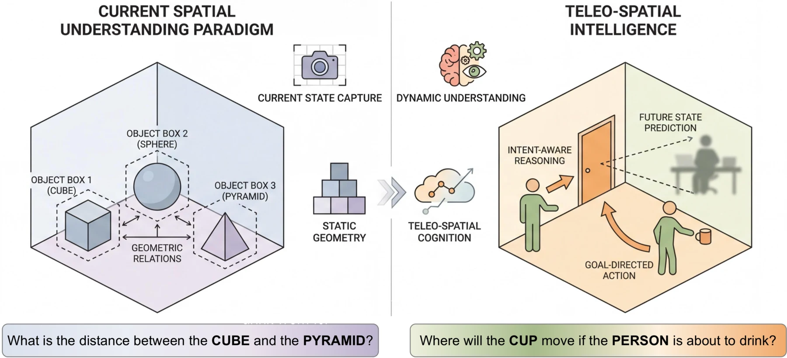
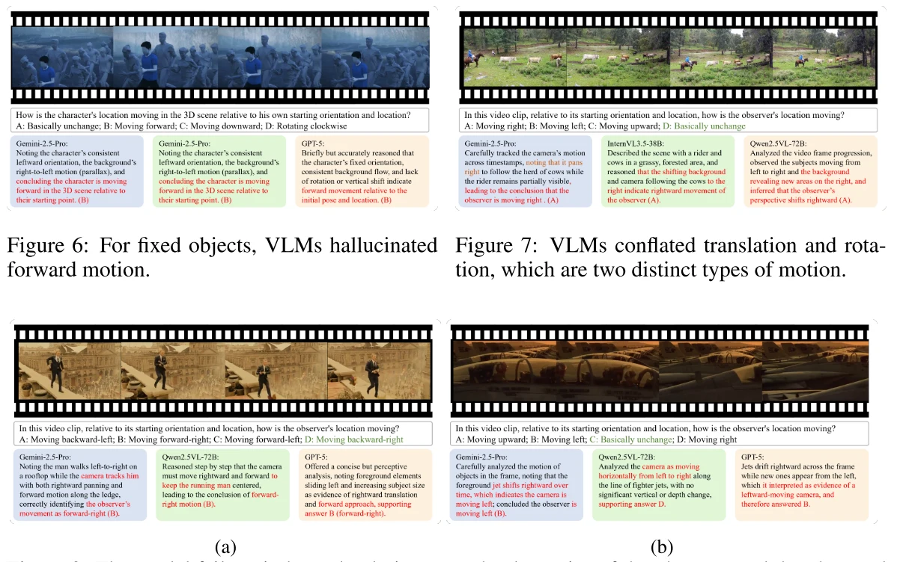

Before a video model can reason, it has to keep track of the world.
A model can recognize every object in a clip and still misunderstand what moved, whose viewpoint changed, or why a person acted. That distinction changes how we think video reasoning should be built and evaluated.

Most spatial benchmarks stop once a model can locate objects and describe their relations. Video asks for something less stable. The camera moves, objects disappear, people act toward goals, and later evidence can change the meaning of an earlier frame.
EscherVerse began from a concern that a model may answer questions about visible geometry without maintaining a usable account of the scene. We use teleo-spatial intelligence for the ability to connect space with physical change, viewpoint, and goal-directed action. The leaderboard records the gap; our main interest is where the underlying account of the scene breaks.
The diagnosis
The familiar explanation is too simple.
The human-model gap persists across model families and training regimes. It is tempting to treat that gap as another scaling problem: add a larger backbone, sample more frames, or ask the model to reason for longer. Those changes may help, but the released comparisons do not support a consistent story in which more inference alone repairs the failure.
The more consequential question is what the model is reasoning over. A fluent explanation can begin from a mistaken reference frame or an action attached to the wrong actor. More reasoning then elaborates the mistake instead of correcting it.
Reading the errors
The camera is part of the scene model.
Several errors that look like failures of motion understanding are more specific. The model sees movement but assigns it to the wrong source. A camera pan becomes an object trajectory; translation becomes rotation; an observer-relative change is reported as a change in the world.

This distinction matters for intervention. If recognition were the main problem, a stronger visual encoder would be the natural fix. Reference-frame errors instead point toward temporal state, viewpoint tracking, and an explicit separation between camera, actors, and world. The model needs to preserve those roles across the clip rather than infer them again for each question.
A working hypothesis
Video understanding may be closer to belief maintenance than repeated description.
We think a video model should carry a revisable scene state: entities, relations, reference frames, possible goals, and unresolved uncertainty. Each observation should update that state. The final answer would then be a readout from an evolving account of the world, rather than a fresh interpretation assembled at the end.
Spatial reasoning should improve when a model must expose and revise its scene state before it answers.
This mechanism is not established by the benchmark. Missing frames, answer extraction, and uneven pretraining coverage can produce similar errors. The alternatives imply different fixes, which is why they should be separated experimentally. Better frame selection addresses missing evidence; structured state updates address evidence that was available but organized incorrectly.
Learning
A shared representation does not make the skills interchangeable.
The category analysis suggests that dynamics, viewpoint, and intent depend on a broad common representation. The training analysis adds an important qualification: changing the content of supervision changes where the model improves. The evidence therefore fits neither a collection of isolated modules nor a single undifferentiated reasoning skill.
Our current design preference is a shared scene state with distinct learning signals for physical change, reference frames, and goals. That structure allows transfer through a common representation while preserving the supervision each capability needs.
What would change our mind?
The next experiment should make belief revision observable.
A stronger evaluation would reveal evidence in stages and ask the model to state what it currently believes. The camera could change while the scene stays fixed, or an actor's goal could change while the motion stays the same. The model should identify which observation changed its conclusion.
If better frame selection removes the errors, the scene-state hypothesis becomes less necessary. If an explicit state remains accurate but the answer is wrong, the bottleneck lies later in reasoning or readout. Either outcome would be more informative than another aggregate score. The aim is to learn whether a model reaches the right answer for the right reason, and where that process fails when it does not.